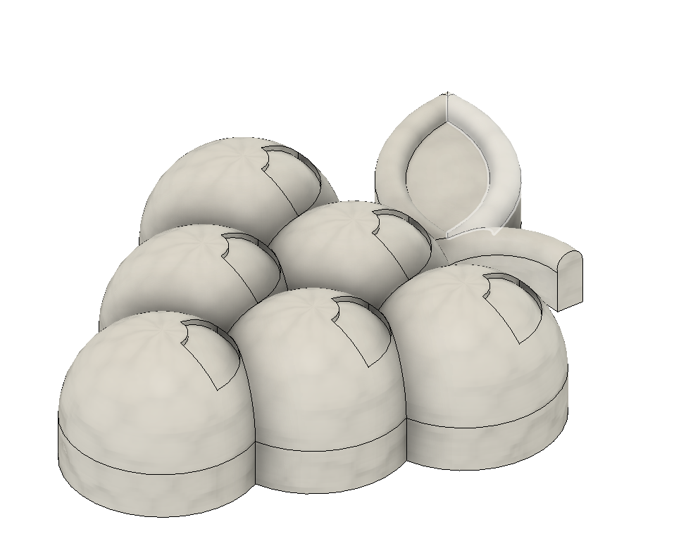
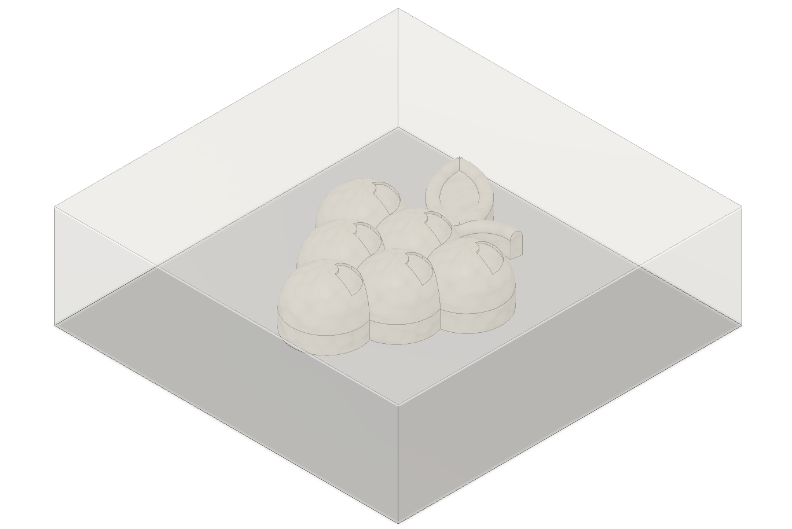
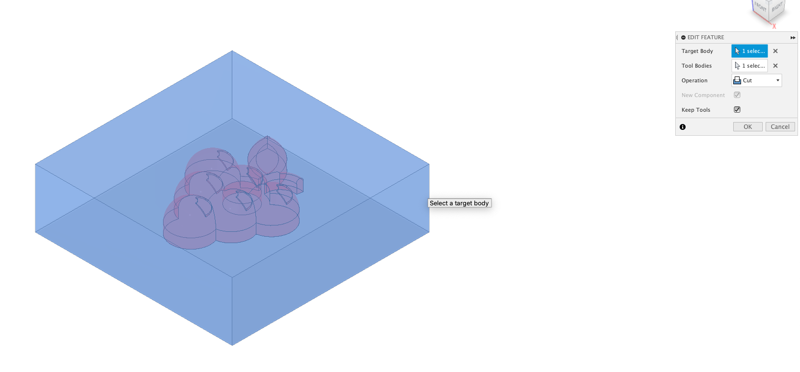
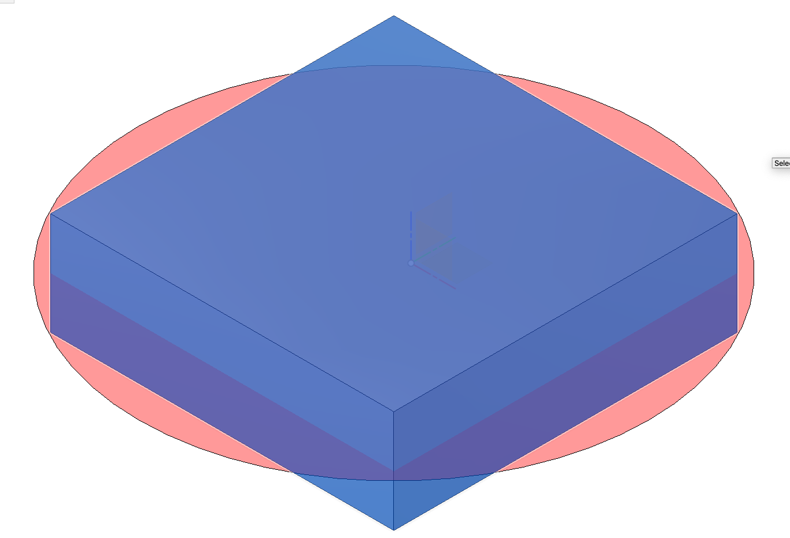
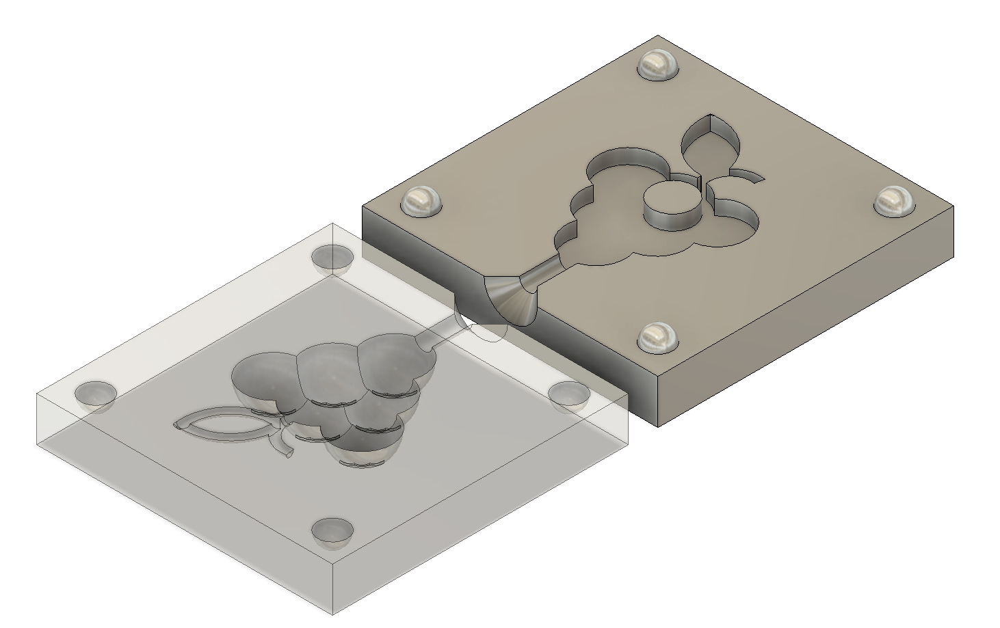
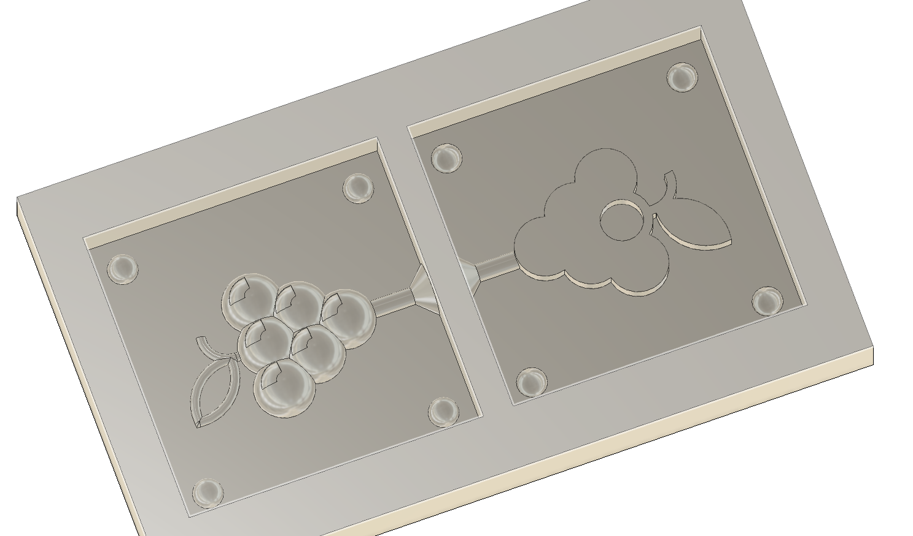
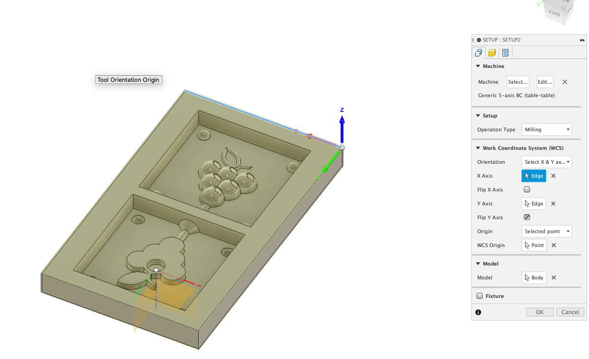
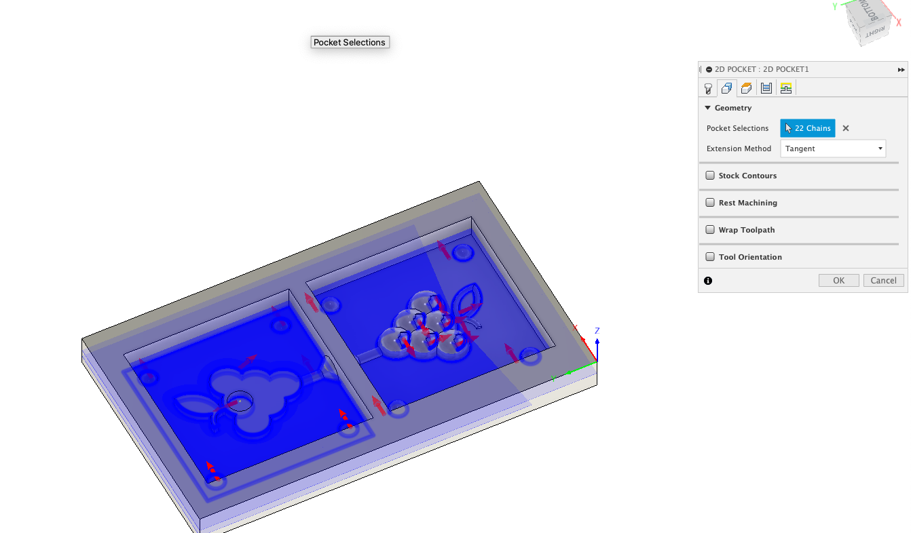

This is me.
Design, draw, prepare and mill a mold in either foam plastic or wax. Prepare toolpaths, both roughing and finishing. Describe the process and the result on a common website. Read the MSDS (safety instructions for the relevant material).
This group project was done by Guðjón Hrafn Þórarinsson, Sara Rós Alfreðsdóttir and Stefán Rafn Gunnarsson.
For our big CNC project we made a wine shelf for bottles of wine and wine glasses. To add to the finishing of the shelf we decided to make grapes that are put in to the shelf. The grapes will be made with the mold that we made for this project.
We start by sketching a rectangle around the grapes and extruding it so that we have a box covering the grape with a bit of space in all directions.
Next using the grapes as a tool we use the combine feature to cut a mold of the grapes in to the box.
We then constructed a plane that suited the object to cut the box in to a top and bottom part.
When using the mold we want the top and bottom parts to fit perfectly together without any sliding or moving. An easy solution to that is making spheres in every corner of the bottom part that stand out and then cut them into the top part, which will make them fit together.
This can be done by using the create -> sphere function and locating one sphere in the top left corner. Then by using create -> pattern -> rectangular pattern it's easy to locate 3 new spheres in the other corners.
Then the next step was obviously to use the bottom part as a tool to cut the spheres in to the top part. By doing this they are located in a perfect position.
Next using the hole function we made the hole in the mold which the material will be poured into.
Now the mold is ready. However we will not be milling the mold. We will be milling a mold which we pour silicone into, which makes the mold for the grapes. So the next steps are to allign the top and bottom part side by side with a bit of space between them.
We then create a bigger box surrounding the top and bottom mold parts. Then using the two parts as tools we cut two pockets in the big box which will be our wax mold which we pour silicone into to make molds for the grapes.
When our mold design is ready we have to create a toolpath which tells our CNC machine how to mill our mold. To do so we go into manifacture -> setup -> new setup. There we start by chosing our milling machine, then operation setup. Because our mold is upside down we have to chose our x and y axis and then our origin point.
Then we go into the stock tab to define our stock and choose from solid and then click our mold. This makes it so it will only mill our mold.
Now we have defined our mold and the x, y and z axis. Next up is the toolpath.
In manifacture we choose 2D -> 2D pocket. Then we choose our tool. A lot of setting can be changed here depending on the material used. Then in geometry -> pockets we chose everything we want to mill. Next we have heights which we leave untouched. In passes we change sideways compensation from left to right and in multiple depths we change maximum roughing stepdown to 0.5mm and uncheck the stock to leave box. The next tab is linking which is the settings for how our tool will move between gcodes. There we choose smooth profile. Then we are ready to press ok.
We have now created a toolpath. To simulate it left-click the setup and press simulate.
Now if we are happy with the result, we again left-click our setup and click post-process to extract our gcode.
Here it's very imporant to choose the right machine, the one at fablab is called ShopBot.
Then we are all done.
We are now capable of making a mold using a CNC milling machine. :)
The process of making this mold:
We all worked well together for this project. As this was a minimal project it didn't take much time however it taught us a lot.
The time was divided into printing, measuring, calculating and coding.
This is me.

This is a bridge.

Circular windows on a spherical building.
If there are any questions please contact me via email, phone or doves.